Le Grand K
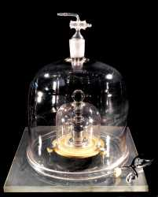
the IPK, photo BIPM (CC BY 4.0)
“The IPK has been conserved at the BIPM since 1889, when it was sanctioned by the 1st General Conference on Weights and Measures (CGPM). It is of cylindrical form, with diameter and height of about 39 mm, and is made of an alloy of 90 % platinum and 10 % iridium.”
“…the 1st CGPM when it sanctioned the prototype and declared that "this prototype shall henceforth be considered to be the unit of mass".”
“By the time of the second verification of national prototypes in 1946 it was found that on average the masses of these prototypes were diverging from that of the international prototype.”
❦
The Wow! Signal

printout: Ohio State University Radio Observatory and North American AstroPhysical Observatory (NAAPO)
“Several pages into the computer printout I was astonished to see the string of numbers and characters "6EQUJ5" in channel 2 of the printout. … In the red pen I was using I immediately circled those six characters and wrote the notation "Wow!" in the left margin of the computer printout opposite them.”
“we stayed at the same declination (i.e., strip of sky) for the next 30 days or so and didn't see the Wow! signal again.”
❦
Lawsuits Against Things
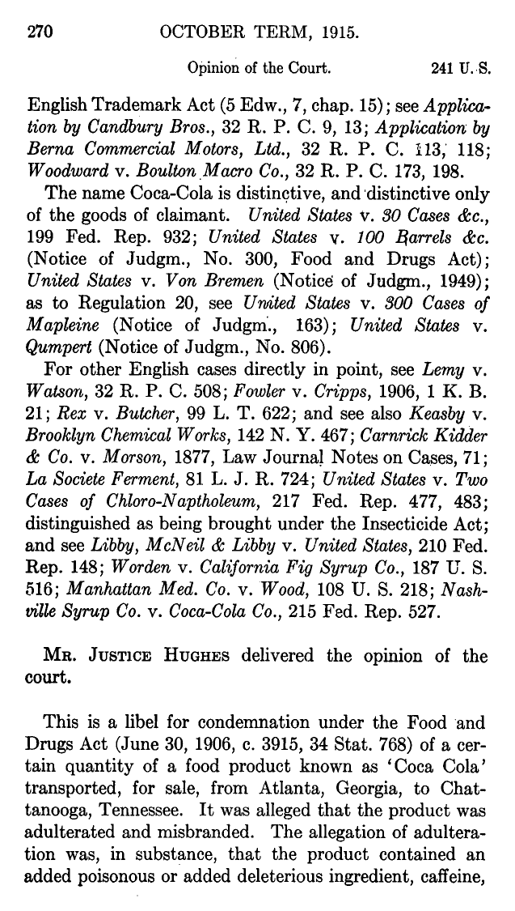
United States v. Coca Cola Co., 241 U.S. 265, 270 (1916), via the Library of Congress
“The whole world, it is said, are parties in an admiralty cause; and, therefore, the whole world is bound by the decision.”
United States v. 422 Casks of Wine (1828)
United States v. Forty-Three Gallons of Whiskey (1883)
United States v. Forty Barrels and Twenty Kegs of Coca-Cola (1916)
United States v. Ninety-Five Barrels Alleged Apple Cider Vinegar (1924)
United States v. One Book Called “Ulysses” (1933)
United States v. One Package of Japanese Pessaries (1936)
United States v. 11 1/4 Dozen Packages of Articles Labeled in Part Mrs. Moffat’s Shoo-Fly Powders for Drunkenness (1941)
United States v. One Solid Gold Object in Form of a Rooster (1962)
Nebraska v. One 1970 2-Door Sedan Rambler (Gremlin) (1974)
United States v. Article Consisting of 50,000 Cardboard Boxes More or Less, Each Containing One Pair of Clacker Balls (1976)
United States v. Approximately 64,695 Pounds of Shark Fins (2008)
South Dakota v. Fifteen Impounded Cats (2010)
United States v. One Tyrannosaurus Bataar Skeleton (2013)
❦
The Oh-My-God Particle
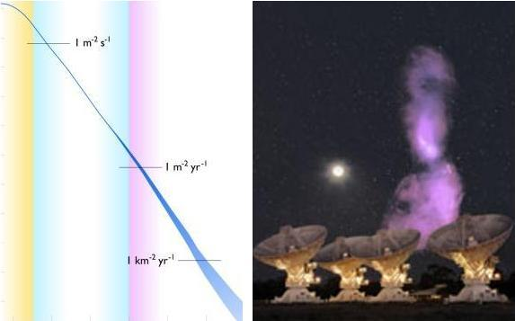
left: the cosmic-ray energy spectrum (source unknown) · right: Centaurus A in radio over the Australia Telescope Compact Array; Feain, Cornwell & Ekers (CSIRO/ATNF), photo Shaun Amy (CSIRO)
“We report the detection of a 51-joule (320 +/- 90 EeV) cosmic ray by the Fly's Eye air shower detector in Utah. This is substantially greater than the energy of any previously reported cosmic ray.”
“Its detection in Universal Time occurred at 7:34:16 on October 15, 1991. This is the only Fly's Eye air shower with energy greater than 80 EeV.”
❦
FishCenter Live
fishcenter.exe
FishCenter · 5 videos from Adult Swim, one after another
video: Adult Swim
“The flagship show of the Adult Swim Streams, FishCenter is a daily, marine-themed call-in game show that features live in-studio performances by America’s top touring bands.”
“FishCenter is a live, interactive comedy program that showcases the Adult Swim aquarium. The show features games, live commentary and viewer participation by way of phone, email, and video.”
“Lucy Dacus performs for the fish.”
❦
Multiocular O
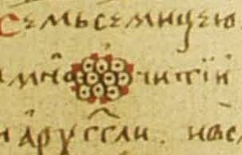
the letter in the fifteenth-century psalter
“Essentially the glyph that I drew had seven eyes, but the source character has ten. (No, I don’t know why I drew seven. Perhaps I miscounted what was in Karsky’s reproduction.)”
“A66E ꙮ CYRILLIC LETTER MULTIOCULAR O • used in the epithet ’many-eyed’”
❦
Shrimpoluminescence
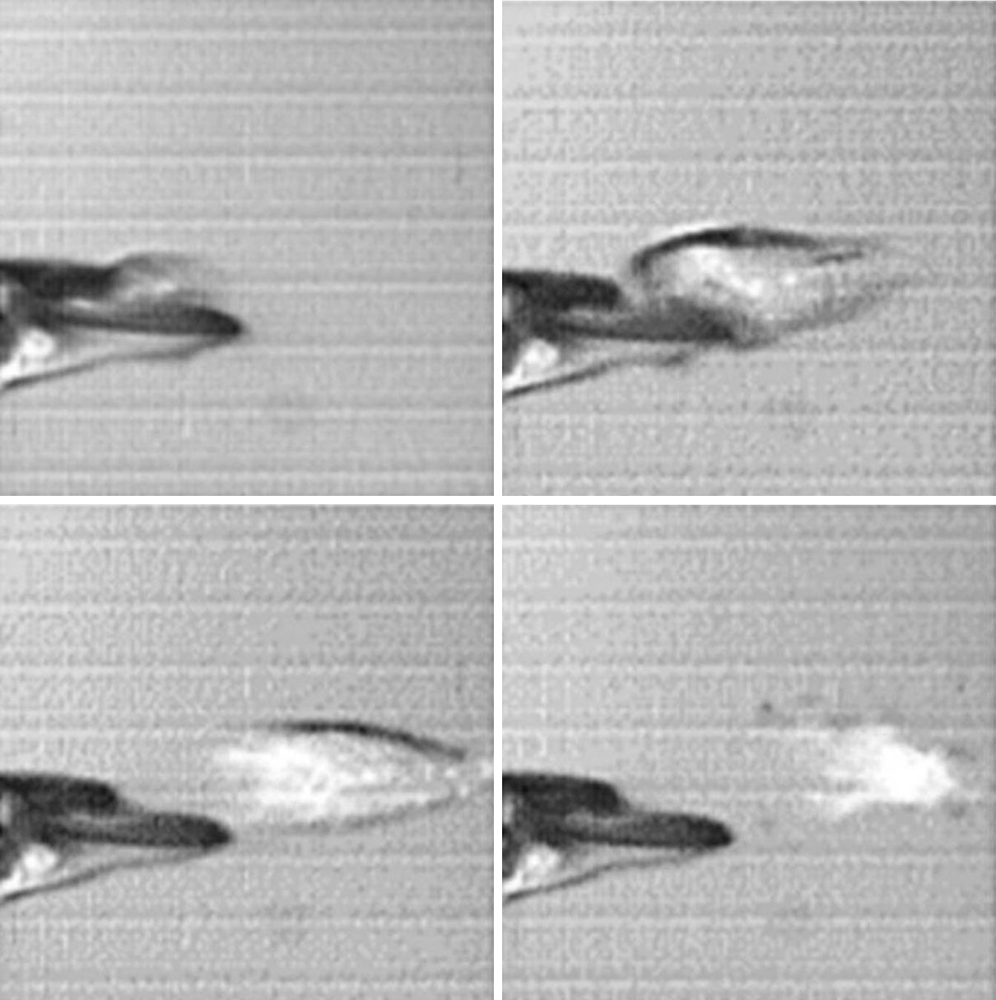
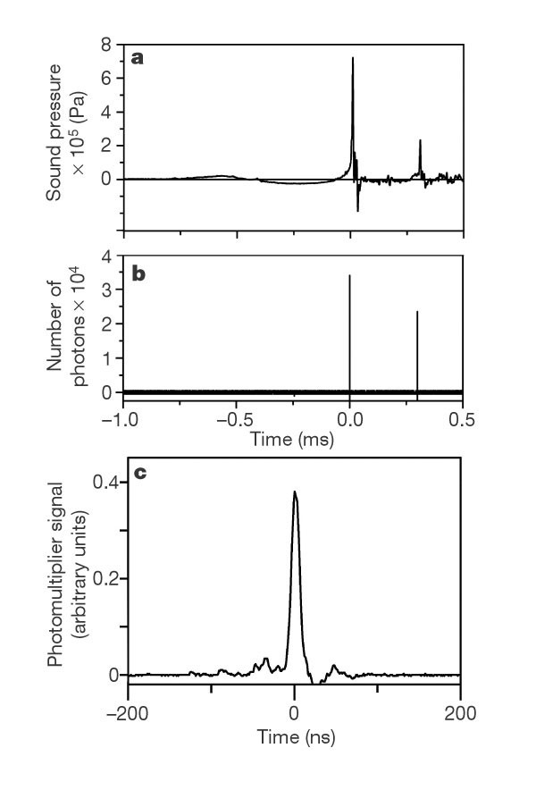
Figs. 1 and 2 from Lohse, Schmitz & Versluis, Nature (2001)
“Here we show that a short, intense flash of light is emitted as the bubble collapses, indicating that extreme pressures and temperatures of at least 5,000 K must exist inside the bubble at the point of collapse. We have dubbed this phenomenon 'shrimpoluminescence' — the first observation, to our knowledge, of this mode of light production in any animal — because of its apparent similarity to sonoluminescence…”
❦
A Patented Way to Swing
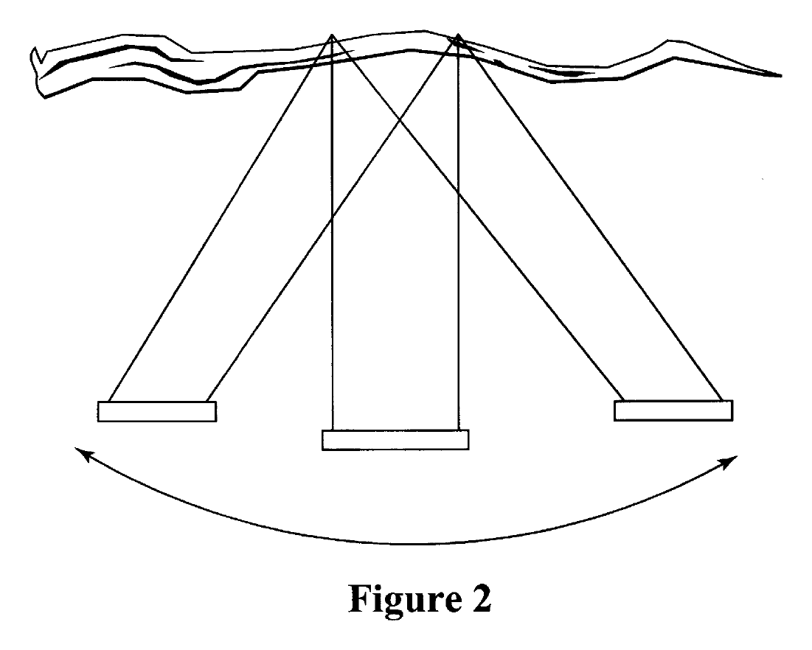
Figure 2, U.S. Patent 6,368,227
“A method of swing on a swing is disclosed, in which a user positioned on a standard swing suspended by two chains from a substantially horizontal tree branch induces side to side motion by pulling alternately on one chain and then the other.”
“The user may even choose to produce a Tarzan-type yell while swinging in the manner described, which more accurately replicates swinging on vines in a dense jungle forest. Actual jungle forestry is not required.”
“Claims 1, 2, 3 and 4 are cancelled.”
❦
Monstrous Moonshine
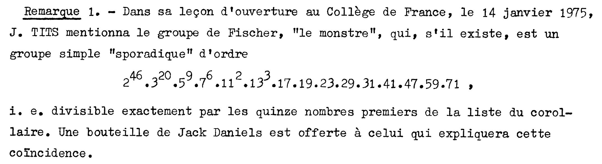
Ogg, Séminaire Delange-Pisot-Poitou (1974–75), exposé 7, p. 7-07, via Numdam
“Une bouteille de Jack Daniels est offerte à celui qui expliquera cette coïncidence.”
(A bottle of Jack Daniels is offered to whoever explains this coincidence.)
— A. P. Ogg, “Automorphismes de courbes modulaires” (1975)
“He noticed that the coefficient 196884 of q¹ was almost equal to the degree 196883 of the smallest complex representation of the monster (up to a small experimental error).”
“John McKay was told that his observation was about as useful as looking at tea leaves.”
❦
Retroreflectors on the Moon
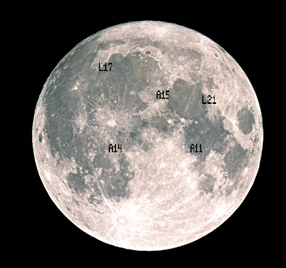
map: NASA
“Unlike the other scientific experiments left on the Moon, this reflector requires no power and is still functioning perfectly after 30 years.”
“At the Moon's surface the beam is roughly one mile wide; scientists liken the task of properly aiming the beam to using a rifle to hit a moving dime two miles away.”
“The Lunokhod 1 reflector was, therefore, effectively lost until March of 2010 when images from the Lunar Reconnaissance Orbiter (LRO) provided a positive identification of the rover and determined its coordinates with uncertainties of about 100 m.”
“The reflector appears to be in excellent condition, delivering a signal roughly four times stronger than its twin reflector on the Lunokhod 2 rover.”
❦
Thousands of Sexes
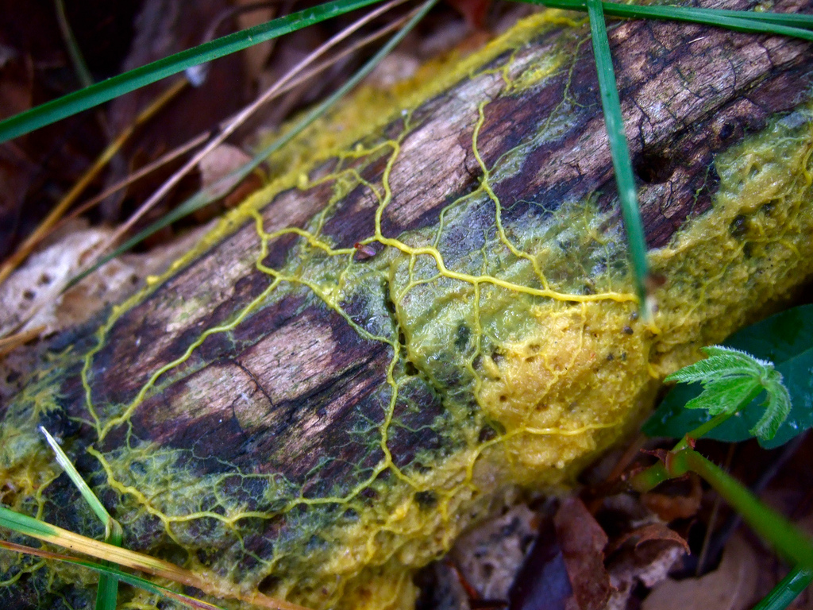
left: Physarum polycephalum, photo frankenstoen, CC BY 2.5 · right: Schizophyllum commune, photo Ermell, CC BY-SA 4.0


“the mating types of the true slime mold P. polycephalum is not restricted to two: there are three mating loci--matA, matB,and matC--and these loci have 16, 15, and 3 alleles,-respectively.”
“The organism with the greatest number of sexually compatible partners is the split gill mushroom (Schizophyllum commune), distributed in woodlands around the world, boasting an astonishing 23,000 mating types.”
❦
Nuclear Pasta
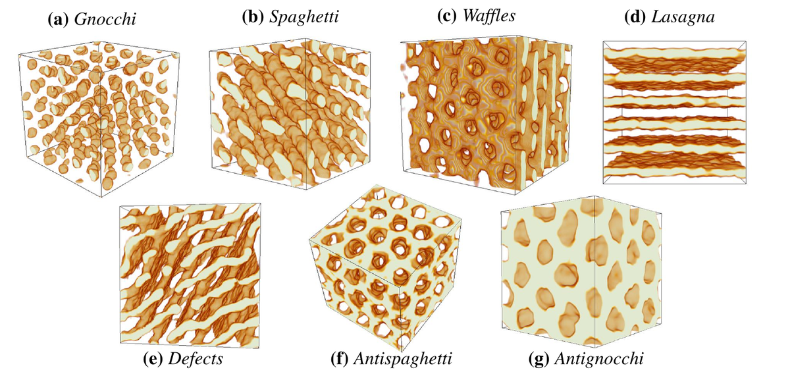
Fig. 3 from Caplan & Horowitz, Rev. Mod. Phys. (2017)
“These phases have since come to be called gnocchi, spaghetti, lasagna, antispaghetti, and antignocchi.”
“Our results show that nuclear pasta may be the strongest known material, perhaps with a shear modulus of 10³⁰ ergs/cm³ and breaking strain greater than 0.1.”
“Just one teaspoonful of neutron star matter would weigh a billion tons on Earth.”
❦
Finger Binary
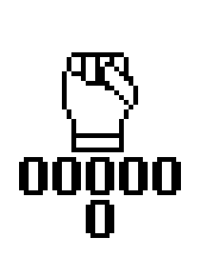

“We start by establishing a convention. An extended finger is a “1”. A retracted finger is a “0”. … Your fingers are now indeed “digits”, and you are using them in positional notation. Observe that you can represent any number from 00000,00000 (both hands clenched) to 11111,11111 (both hands extended). … It’s good anywhere from 0 to 1023.”
❦
Bumblebees at Play
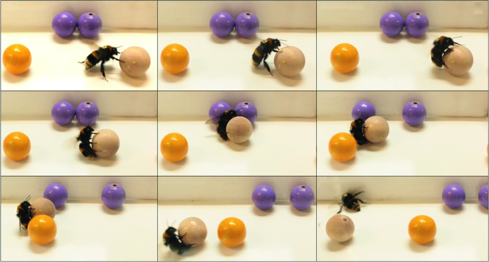
Fig. 2 from Galpayage Dona et al. (2022), CC BY 4.0
“Here, we show that rolling of wooden balls by bumble bees, Bombus terrestris, fulfils behavioural criteria for animal play and is akin to play in other animals. … Similar to vertebrate play, we also found age and sex differences for ball rolling by bumble bees: younger bees rolled more balls than older bees and male bees rolled individual balls for longer durations than females.”
“Individual bees rolled balls between 1 and, impressively, 117 times over the experiment.”
❦
The Dream House
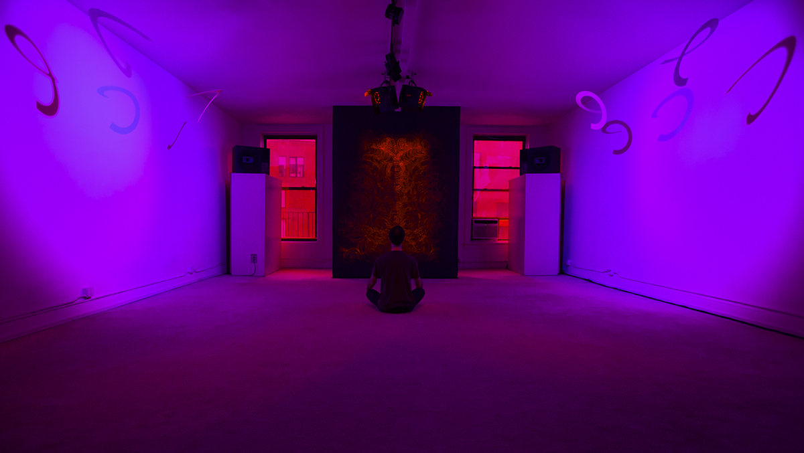
photo © Jung Hee Choi 2023, MELA Foundation
“The long-term Dream House exhibition opened in Fall 1993…”
“…a periodic composite sound waveform environment created from sine wave components generated digitally in real time on a custom-designed Rayna interval synthesizer.”
“At the opening of the 1993 Dream House installation, Young wrote: "This is my newest and most radical sound environment; the Rayna synthesizer has made it possible to realize intervals that are derived from such high primes that, not only is it unlikely that anyone has ever worked with these intervals before, it is also highly unlikely that anyone has ever heard them or perhaps even imagined the feelings they create."”
❦
Tupper’s Self-Referential Formula
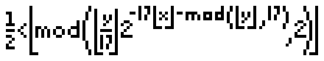
graphed for this page from the k in Tupper’s Figure 13
“Figure 13: Finished computed graph, from algorithm 3.2, of ½ < ⌊mod(⌊y/17⌋ 2^(−17⌊x⌋−mod(⌊y⌋,17)), 2)⌋ with a 1696 × 272 pixmap over [0, 106] × [k, k + 17], k = 960 939 379 918 958 884 971 672 962 127 852 754 715 004 339 660 129 306 651 505 519 271 702 802 395 266 424 689 642 842 174 350 718 121 267 153 782 770 623 355 993 237 280 874 144 307 891 325 963 941 337 723 487 857 735 749 823 926 629 715 517 173 716 995 165 232 890 538 221 612 403 238 855 866 184 013 235 585 136 048 828 693 337 902 491 454 229 288 667 081 096 184 496 091 705 183 454 067 827 731 551 705 405 381 627 380 967 602 565 625 016 981 482 083 418 783 163 849 115 590 225 610 003 652 351 370 343 874 461 848 378 737 238 198 224 849 863 465 033 159 410 054 974 700 593 138 339 226 497 249 461 751 545 728 366 702 369 745 461 014 655 997 933 798 537 483 143 786 841 806 593 422 227 898 388 722 980 000 748 404 719.”
“The formula of figure 13 can be modified to enumerate all possible j × k binary grids with both j and k varying.”
❦
The Giant Spiral
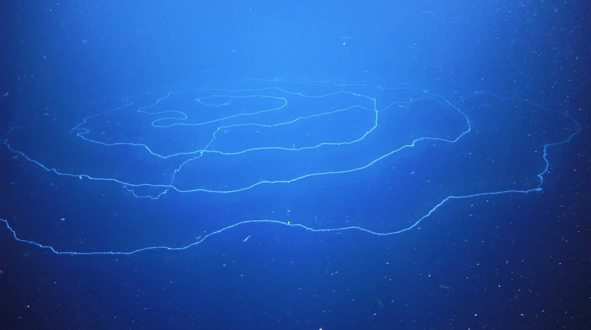
photo: Schmidt Ocean Institute
“An estimated 150-foot siphonophore–seemingly the longest animal ever recorded–was discovered during a month-long scientific expedition exploring the submarine canyons near Ningaloo.”
“The discovery of the massive gelatinous string siphonophore–a floating colony of tiny individual zooids that clone themselves thousands of times into specialized bodies that string together to work as a team–was just one of the unique finds…”
❦
Gödel Numbers
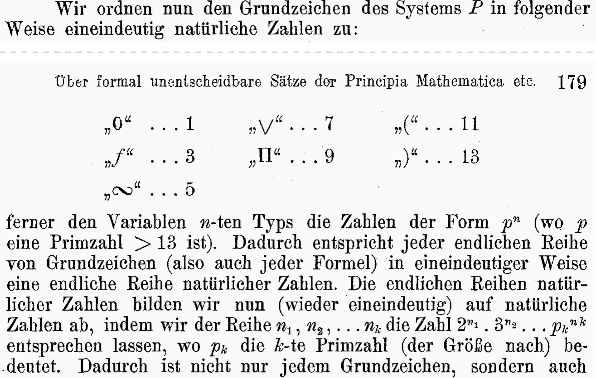
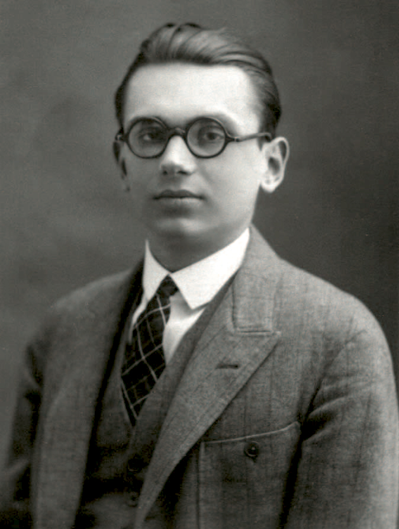
left: Monatshefte für Mathematik und Physik 38 (1931), pp. 178–179 · right: Gödel as a student, c. 1925, Institute for Advanced Study archives
“These finite series of natural numbers we now map (again in one-to-one correspondence) on to natural numbers, by letting the number 2ⁿ¹, 3ⁿ² . . . pₖⁿᵏ correspond to the series n1, n2, . . . nk, where pk denotes the k-th prime number in order of magnitude.”
“We are therefore confronted with a proposition which asserts its own unprovability.”
❦
The Gemini
gemini.exe
Gemini in Conway’s Game of Life · video by Gustavo Díaz-Jerez
“I've created a universal constructor based spaceship. The speed is (5120,1024)c/33699586, and it runs well in Golly's hashlife.”
“Andrew J. Wade has recently built a self-replicating configuration in Life. … The spaceship propagates at the impressively slow speed of (5120,1024)c/33699586. This is the first spaceship that travels neither orthogonally nor diagonally.”
“In fact, the two ends of the spaceship that we construct will be exactly identical. This is the reason for its name “Gemini”—it is Latin for “twins”.”